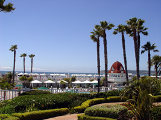

SAN DIEGO
Some things we like to do in San Diego:
The best thing about living in San Diego is that if you have some spare time, there are endless activities to do.
If you want to go to the beach, Del Mar has limited parking (none after 10am) but toilets, lifeguards and good boogie boarding waves. Ocean Beach has a little more of the teen scene, but is great for boogie boarding, sand castle building, and surfing. Coronado beach is great for the view of Mexico and the endless shallows where kids can play and splash without the crushing waves coming up every few seconds.
If you want to go to see animals, the Wild Animal Park is great, with a balloon ride and biodiesel train ride that circles the "Jurassic" style park. Both this Park and the Zoo have enormous natural looking enclosures that look like a real African safari. The San Diego Zoo has a double bus ride and a tram that takes you over the park from one end to the other.
If you want to see vegetation, and you didn't get enough of it at the Zoo, Wild Animal Park, or water conservation gardens, you can couple that with sea life at Sea World. The annual plants are arranged around this park beautifully, and it's easy to forget you came to see the fishies. Petting bat rays, looking at incredibly kept aquariums, touching sea cucumbers and stars, walking through a tunnel of sharks and watching dolphins and Shamu do tricks in enormous pools are only the regular things to do there. Sea World has Cirque de la Mer and various performing shows throughout the day to keep you entertained, as well as good Atlantis roller coaster.
You can get more aqua fix at the Birch Aquarium. They also have a conservation section that shows you how to save money on energy usage and at the same time you can broadcast the news yourself. The water tables by the shark tank are always riveting to kids, and don't forget to get a picture in the mouth of the shark.
Shopping for some may be as difficult as a dental appointment, but Fashion Valley makes it easy. They have everything from discount shops to the highest of the high brow shops. Shopping in an outdoor mall is nice when the weather is nearly always sunny and warm.
The Gaslamp is a great place to shop if you like the mom-and-pop shops, and you can check out a little of San Diego history too. Old Town is great for the Mexican influence, and no tourist can escape the area without at least a token visit to Old Town. Curiosity shops and hand embroidered Mexican goods are cheap and everywhere.
Cheaper still, Tijuana is only 30 minutes away, and there are endless bargains there. Better during the day if the whole family is going because parties at night tend to get out of hand. Watch out for return border crossing though, because you will likely wait an hour or more to return. Trolley and walking across the border can be much more convenient for touristy plans.
The Drive-Ins still play great shows and broadcast via your car stereo (or ghetto blaster if you brought one); Buenos Dias in La Mesa for carne asada burritos; Balboa Park for a relaxing picnic or mega-museums; La Jolla for the children's pool (should be renamed as the "seal pool" because children have been ousted by the local population); La Jolla cove for an incredible view and some good kite flying; more great kite flying wind on Fiesta "foochie" Island; model home tours can give you ideas for your own home; the horse races; the wooden roller coaster at Mission Beach; the local surf and bikini shops; fish tacos...the list goes on.
Still on my "to-do" list: Legoland in Carlsbad, fields of flowers in Oceanside, Observatory at new moon...
Previously Natasha lived in Seattle. Here are some things she liked to do in Seattle:
We usually spend most of our time at Golden Gardens, Karkeek Park, Greenlake, Volunteer Park (great conservatory there) or other obscure parks around. We've hit most of them more than a few times. The Puget Sound is really cold, but has great rocks and shells when the tide is out. Lake Washington is great too; you can waterski and swim, but it does get cold too. When we're not at a park or downtown or at the zoo/aquarium/Pike Place market, we're probably in a library. Sometimes we just like to window shop. There's a great salmon run right by our house in Issaquah. The best time to see them come home is the first week of October, when they're about 3 feet long and fighting to spawn.
We like to take the ferry to any of the islands at sunset.
We like to go to the zoo and check out the baby elephant, the monkeys and the other "natural setting" enclosures and habitat-style areas for animals...relatively progressive, as zoos go...
Sometimes we hit the Art Museum or the Art Walk on the first Thursday of the month (free admission).
Our favorite little restaurants in Seattle:
Owl 'N Thistle
Elephant & Castle
The Central Saloon
J & M Cafe and Cardroom
Dragonfish Cafe
Nikko
As well as...Jalisco's (for Mexican), The General's for BBQ, Chang's for Mongolian & The Magic Dragon--our absolute fav for Chinese. Cage recommends the honey sesame chicken. I like general tsao (for the spice in my life).
More Info on Seattle: